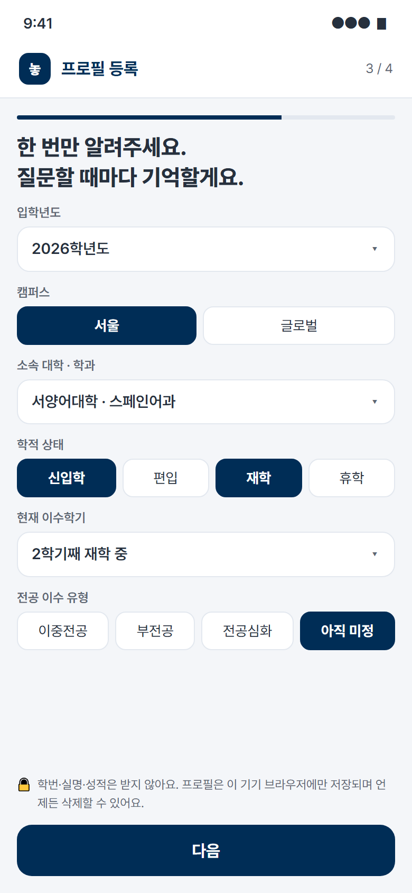
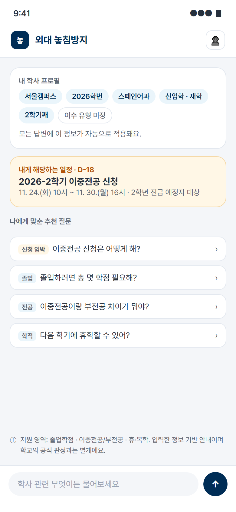
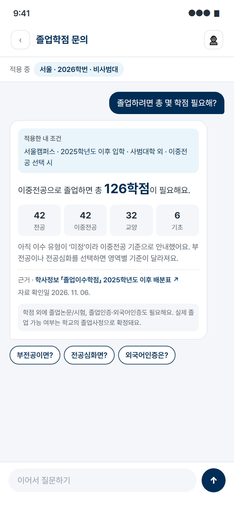
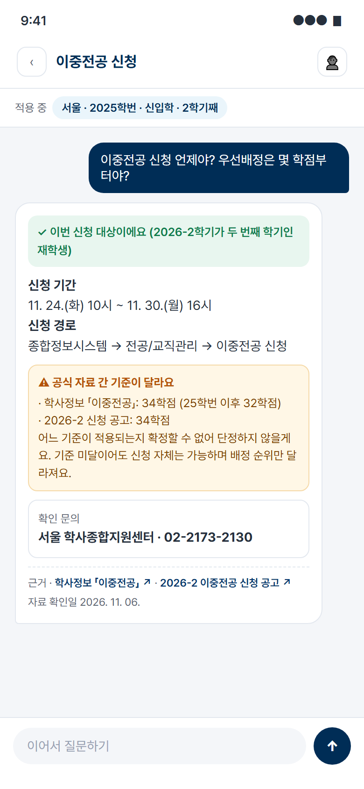
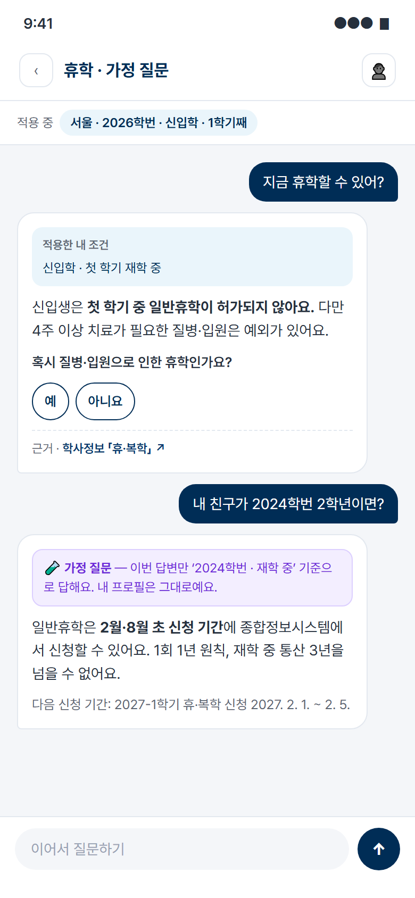
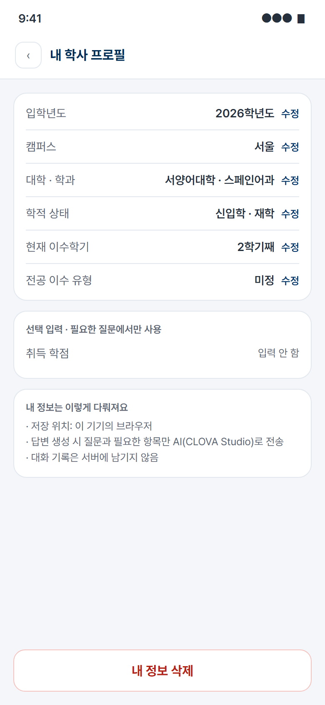
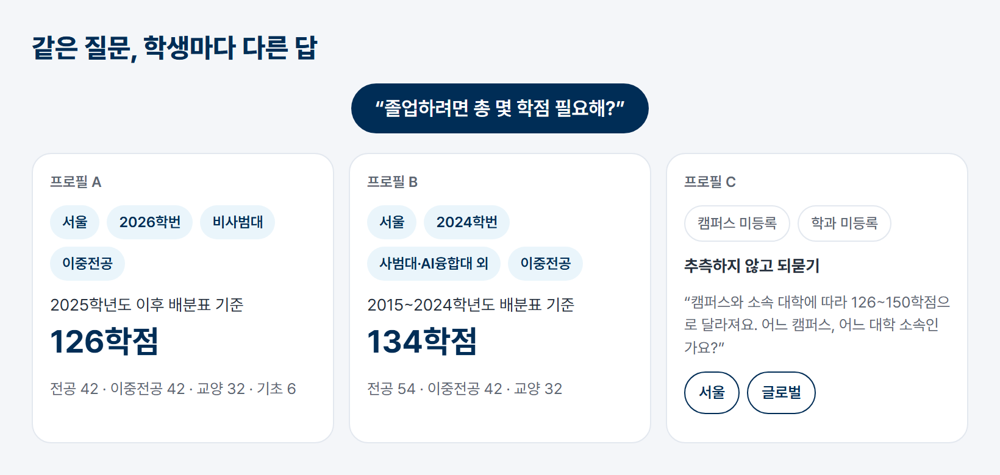

| 팀명 | |
|---|---|
| 참가 형태 | 개인 참가 (학생 1인) |
| 제출일 | 2026. 11. |
| 팀명 | |||
|---|---|---|---|
| 팀원 수 | 1명 (개인 참가) | ||
| 성명 | 학과 | ||
| 학번 | 연락처 | ||
| 이메일 | |||
한국외국어대학교의 학사 규정은 입학년도, 캠퍼스, 소속 대학, 전공 이수 유형, 학적 상태(신입학·편입, 재학·휴학)에 따라 다르게 적용됨. 학생은 공지와 규정을 읽은 뒤 자신에게 해당하는 기준을 직접 대조해야 하며, 이 과정에서 해석 오류와 정보 누락이 발생함.
| 구분 | 적용 기준 | 졸업학점 |
|---|---|---|
| 서울캠퍼스 2025학년도 이후 입학생 (사범대학 제외), 이중전공 | 전공 42 · 이중전공 42 · 교양 32 · 기초 6 | 126 |
| 서울캠퍼스 2015~2024학년도 입학생 (사범대학·AI융합대학 제외), 이중전공 | 전공 54 · 이중전공 42 · 교양 32 | 134 |
| 글로벌캠퍼스 통번역대학 (2015~2024학년도 입학생), 이중전공 | 전공 70 · 이중전공 42 · 교양 32 | 150 |
출처: 한국외대 학사정보 「졸업이수학점」 졸업학점 배분표
출처: 학사정보 「이중전공」, 「2026-2학기 이중전공 신청 일정 공고」(2026. 11. 05.)
| 일정 | 기간 | 대상 |
|---|---|---|
| 이중전공 신청 | 11. 24. ~ 11. 30. | 2학년 진급 예정자, 후기 편입생 |
| 겨울 계절학기 수강신청 | 11. 25. ~ 11. 27. | 재학생, 복학 예정 휴학생 |
| 창업장학금 신청 | ~ 11. 27. | 공고상 자격 충족자 |
| HUFS Dream 장학금 신청 (글로벌캠퍼스) | 11. 3. ~ 11. 27. | 공고상 자격 충족자 |
각 일정은 서로 다른 게시판에 공지되며, 일정마다 본인 해당 여부와 추가 조건을 별도로 확인해야 함.
졸업을 위해서는 졸업학점 외에 졸업논문 또는 졸업시험 통과, 졸업인증 및 외국어인증 통과가 필요함. 학점 이수를 완료했더라도 인증이 미완료이면 수료(졸업대기) 처리되며, 이후 휴학 및 수강신청이 불가함.
| 기능 | 내용 |
|---|---|
| ① 프로필 등록·저장·수정 |
· 저장 항목: 입학년도, 캠퍼스, 소속 대학·학과, 현재 이수학기, 학적 상태(신입학/편입, 재학/휴학), 전공 이수 유형(이중전공/부전공/전공심화+부전공/전공심화/미정) · 학번 전체, 실명, 성적은 수집하지 않음 · 프로필 확인·수정·삭제 기능 제공 |
| ② 프로필 기반 학사 Q&A |
· 질문 주제별로 필요한 개인 조건만 선별하여 적용 (예: 졸업학점 → 캠퍼스·입학년도·대학·이수 유형 / 휴학 → 학적 상태·이수학기) · 적용 규정 자체가 달라지는 수준의 개인화 · 대화 맥락 유지: 후속 질문(“부전공으로 바꾸면?”, “신청은 어디서 해?”)에서 조건과 주제를 이어받음 |
| ③ 적용 근거 표시 |
· 답변마다 적용한 개인 조건, 관련 규정 요약, 원문 링크, 자료 확인 기준일 표시 · 해당 시 신청 기간 및 신청 경로 함께 안내 |
| ④ 정보 부족·예외 처리 |
· 판단에 필요한 정보(이수학점, 편입 여부 등)는 필요한 시점에 추가 질문 · 공식 자료 간 충돌 시 충돌 내용과 담당 부서 연락처 안내 · 가정 질문(“친구가 2024학번이면?”)은 해당 답변에만 적용하고 저장 프로필은 유지 · 사용자 입력 기반 안내이며 학교의 공식 학적·졸업 판정과 별개임을 표시 |
| 영역 | 내용 |
|---|---|
| 졸업학점 | 캠퍼스·입학년도·대학·이수 유형별 졸업학점 및 영역별 최소 이수학점 안내 |
| 이중전공·부전공 | 신청 대상·기간·방법, 우선배정 기준, 캠퍼스 간 제한 학과, 변경 신청 |
| 휴·복학 | 신청 시기, 신·편입생 1학기 일반휴학 제한, 휴학 기간 한도 |
지원 범위 외 질문은 해당 공식 페이지 및 담당 부서로 안내함.
교내에는 학사 챗봇 훕또기와 학교 앱 PUSH·알림톡 발송 시스템 UMS가 운영 중임. 아래는 각 서비스의 공개 화면 및 공개 안내 자료 기준 비교임.
| 구분 | 기존 서비스 | 외대 놓침방지 |
|---|---|---|
| 학사 질의응답 | 공개 학사 자료 기반 답변 | 저장된 캠퍼스·입학년도·대학·이수 유형을 질문마다 자동 반영하여 적용 규정을 개인 단위로 특정 |
| 조건 입력 | 맞춤 장학금 찾기에서 조건 입력 (입력 조건 비저장) | 최초 등록한 프로필을 여러 대화와 학사 주제 전반에 재사용 |
| 일정 안내 | 공지 마감 D-day 안내 | 기간과 함께 본인 대상 여부 및 추가 조건 설명 |
| 불확실성 처리 | 장학금 조건을 신청 가능·확인 필요·해당 없음으로 구분 | 동일 원칙을 학사 상담 전반에 적용, 공식 자료 간 충돌을 명시 |
| 알림 발송 | UMS를 통한 대상자 PUSH·알림톡 | 개인 조건 해석 결과를 기존 알림 채널과 연계하는 방안 제안 |







| 역할 | 도구 | 비고 |
|---|---|---|
| 질문 의도 파악, 필요 조건 판별, 대화 맥락 유지 | 네이버클라우드 CLOVA Studio (HyperCLOVA X) | 자연어 해석 영역 |
| 관련 근거 검색 | CLOVA Studio 임베딩 + 메타데이터 필터 | 입학년도·캠퍼스·대학·시행 시점으로 사전 필터링 |
| 졸업학점, 신청 자격, 기간 산출 | 검증된 규정 데이터 + 코드 로직 | 수치·자격 기준의 생성형 AI 의존 배제 |
| 자료 충돌 감지 | 규정 데이터 충돌 표시 + 로직 | 게시일 기준 자동 덮어쓰기 방지 |
| 설명 문장 생성 | HyperCLOVA X | 확정된 근거만 입력 |
| 서비스 개발 | AI 코딩 에이전트 (Claude Code 등) | 1인 바이브코딩 |
| 서버·배포 | 네이버클라우드 플랫폼 | — |
각 규정·공지 단위에 적용 입학년도 범위, 캠퍼스, 적용 대학·학과, 대상 학적(신입학/편입), 시행 학기, 원문 링크, 확인일을 메타데이터로 부여함. 학년 단독 기준이 아닌 학적·입학년도 기준으로 대상을 판별하여 편입생 및 휴·복학생 사례에 대응함.
1인 개발자가 AI 코딩 에이전트를 협업 도구로 활용하여 요구사항 프롬프트 작성 → 코드 생성 → 검토 → 오류 수정 → 검증 주기로 개발함. 주요 개발 과정은 결과보고서에 사례로 기록함.
| 질문 | 프로필 | 답변 |
|---|---|---|
| 졸업하려면 총 몇 학점 필요해? | 서울 · 2026학번 · 비사범대 · 이중전공 | 2025학년도 이후 배분표 기준 126학점 |
| (동일 질문) | 서울 · 2024학번 · 사범대·AI융합대 외 · 이중전공 | 2015~2024학년도 배분표 기준 134학점 |
| (동일 질문) | 캠퍼스·학과 미등록 | 필요 조건 추가 질문 |
| 이중전공 신청 언제야? | 2026-2학기가 두 번째 학기인 신입학 재학생 | 신청 대상 확인, 기간(11. 24. ~ 11. 30.) 및 신청 경로 안내 |
| (동일 질문) | 2026년도 후기 편입생 | 후기 편입생 신청 대상 규정 반영 |
| 우선배정 기준이 몇 학점이야? | 2025학번 | 32학점·34학점 자료 충돌 명시, 학사종합지원센터 안내 |
| 내 친구가 2024학번이면? | 저장 프로필 2026학번 | 해당 답변만 2024학번 기준 적용, 저장 프로필 유지 |
| 그럼 부전공으로 바꾸면? | (이전 대화 연속) | 조건·주제 유지 후 부전공 기준 답변 |
| 기간 | 개발 내용 | 완료 기준 |
|---|---|---|
| 1주차 11. 16. ~ 11. 22. | 프로필 저장·수정, 3개 영역 규정 데이터 구축·검수, 기본 근거 검색 Q&A | 재접속 시 프로필 유지, 서로 다른 프로필의 동일 질문에 대해 적용 규정이 달라짐 |
| 2주차 11. 23. ~ 11. 29. | 질문별 조건 판별, 추가 질문, 근거·충돌 표시, 가정 조건 분리 | 편입생·정보 누락·자료 충돌·가정 조건 사례 처리 |
| 3주차 11. 30. ~ 12. 06. | 시험 세트 평가, 사용자 테스트, 오답 수정, 배포, 결과보고서·시연 영상 | 지원 범위 및 평가 결과(실패 유형 포함) 제시 |
| 역할 | 수행 방식 |
|---|---|
| 기획·규정 데이터 | 공식 자료 수집·검수, AI 보조 구조화 |
| 프론트엔드·백엔드 | AI 코딩 에이전트 활용 개발 및 코드 검토 |
| 품질 검증 | 시험 세트 자동 평가, 직접 검수, 사용자 테스트 |
| 발표 | 발표 자료 및 시연 준비 |
| 항목 | 방법 및 목표치 |
|---|---|
| 개인 조건 반영 | 프로필·질문 조합 20~30개에 대해 사전 정리한 정답(적용 규정·근거)과 비교 |
| 개인화 정확도 | 적용 규정·핵심 사실 일치율 95% 이상 (목표치), 실패 유형 분석 |
| 반복 입력 부담 | 연속 질문 5개에서 저장된 정보의 불필요한 재질문 여부 확인 |
| 불확실성 처리 | 정보 부족·자료 충돌 사례에서 추가 질문 또는 확인 안내 여부 확인 |
| 근거 일치 | 출처 링크 첨부 여부 및 답변 내용과 근거의 일치 여부 각각 점검 |
| 사용자 효용 | 외대생 10~15명 대상, 프로필 저장 유무에 따른 해결 시간·재입력 횟수·정답 도달률 비교 |
| 예상 어려움 | 해결 방안 |
|---|---|
| 생성형 AI의 학점·자격 기준 오생성 | 수치·자격은 검증된 데이터와 로직으로만 산출, AI는 해석·설명 담당 |
| 공식 자료 간 충돌 | 단정 답변 보류, 충돌 내용 표시 및 담당 부서 안내 |
| 학번·캠퍼스·학과별 규정 차이 | 메타데이터 사전 필터링, 미지원 조합 명시 |
| 가정 질문에 의한 프로필 오염 | 답변 한정 조건과 프로필 수정 동작 분리 |
| 1인 개발 작업량 | 지원 영역 3개로 한정, AI 코딩 에이전트 활용 |
| 구분 | 내용 |
|---|---|
| 수집 항목 | 입학년도, 캠퍼스, 대학·학과, 이수학기, 학적 상태, 이수 유형 (이수학점은 필요 시 선택 입력) |
| 미수집 항목 | 학번 전체, 실명, 성적표 |
| 저장 위치 | 사용자 기기 브라우저 내 저장, 답변 생성 시 질문과 필요한 프로필 항목만 CLOVA Studio API로 전송 |
| 대화 기록 | 서버 장기 저장 없음, 평가용 로그는 동의한 테스트 참여자에 한해 익명 수집 |
| 삭제 | 앱 내 ‘내 정보 삭제’로 즉시 삭제 |
| 구분 | 내용 |
|---|---|
| 학생 | 조건 재설명 없이 본인에게 적용되는 규정과 절차를 즉시 확인, 신청 대상·기간 오해로 인한 기회 손실 감소 |
| 학교 | 반복 문의 감소에 따른 학사종합지원센터·학과 사무실 업무 부담 완화 |
| 제도 활용 | 이중전공, 교환학생·파견 등 외대 특성화 제도의 적기 활용 확대 |
| 단계 | 대상 |
|---|---|
| 본선 검증 | 외대생 10~15명 사용자 테스트, 프로필·질문 시험 세트 20~30개 |
| 1차 적용 | 이중전공 신청을 앞둔 1학년 및 후기 편입생 |
| 확대 적용 | 졸업요건 점검이 필요한 고학년, 휴·복학생 등 학부 재학생 전반 |
| 자료 | URL |
|---|---|
| 2026학년도 학사일정 | https://www.hufs.ac.kr/hufs/11360/subview.do |
| 졸업이수학점 (졸업학점 배분표) | https://www.hufs.ac.kr/hufs/11373/subview.do |
| 이중전공 | https://www.hufs.ac.kr/hufs/11384/subview.do |
| 부전공 | https://www.hufs.ac.kr/hufs/11385/subview.do |
| 휴·복학 | https://www.hufs.ac.kr/hufs/11387/subview.do |
| 졸업 | https://www.hufs.ac.kr/hufs/11390/subview.do |
| 2026-2학기 이중전공 신청 일정 공고 | https://www.hufs.ac.kr/bbs/hufs/2181/270884/artclView.do |
| 2026-겨울계절학기 수강신청 및 일정 공고 | https://www.hufs.ac.kr/bbs/hufs/2181/270769/artclView.do |
| 2026학년도 창업장학금 신청 안내 | https://www.hufs.ac.kr/bbs/hufs/2182/269143/artclView.do |
| 2026-2학기 글로벌캠퍼스 HUFS Dream 장학금 신청 안내 | https://www.hufs.ac.kr/bbs/hufs/2182/270613/artclView.do |
| 훕또기 | https://chat.hufs.ac.kr/ |
| HUFS UMS 안내 | https://ums-guide.hufs.ac.kr/ |
※ 자료 확인일: 2026. 11. 06.